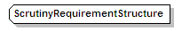

| diagram |  | ||
| namespace | urn:oasis:names:tc:evs:schema:eml | ||
| type | extension of xs:token | ||
| properties |
|
||
| used by |
|
||
| source | <xs:complexType name="ScrutinyRequirementStructure"> <xs:simpleContent> <xs:extension base="xs:token"/> </xs:simpleContent> </xs:complexType> |